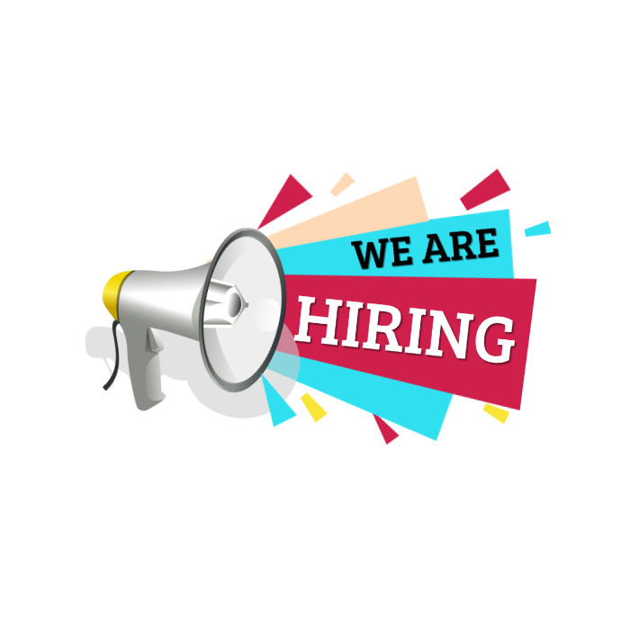

Open Position
Product Designer
We are looking for a talented product designer to create innovative, user-centered designs for our products.
In this role, you’ll collaborate with cross-functional teams to develop wireframes, prototypes, and design systems that align with user needs and business goals.
You’ll also gather feedback and iterate designs based on usability testing. Strong design skills, proficiency in design tools, and attention to detail are essential.
If you're passionate about transforming ideas into impactful products, we'd love to have you on our team.
Qualifications
- Bachelor's degree in Design, UX/UI, Human-Computer Interaction, or a related field.
- Proficiency in design tools such as Sketch, Figma, Adobe Creative Suite, InVision, or similar.
- Knowledge of HTML/CSS and basic front-end development (bonus).
- Strong understanding of user research, wireframing, prototyping, and usability testing.
- Excellent analytical and problem-solving skills with the ability to convert user needs into functional product features.
Responsibilities
- Conduct user research, interviews, and surveys to understand user needs and gather insights.
- Create low-fidelity wireframes and high-fidelity prototypes to map out user journeys and product workflows.
- Design intuitive, user-friendly interfaces that align with user experience best practices and brand guidelines.
- Iterate on designs based on feedback, usability testing, and user insights.
